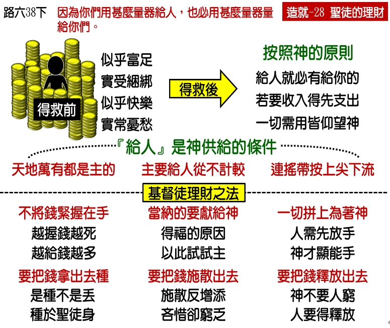

诗歌：488 首、340 首
重要经文：
路加福音六章三十八节：你们要给人，就必有给你们的，用十足的量器，连摇带按，上尖下流的倒在你们怀里；因为你们用什么量器量给人，也必用什么量器量给你们。
哥林多后书九章六节：还有，少种的少收，多种的多收。
玛拉基书三章十节：万军之耶和华说，你们要将当纳的十分之一，全然送入仓库，使我家有粮，以此试试我，是否为你们敞开天上的窗户，倾福与你们，甚至无处可容。
纲目要点：
壹 要按着神的原则理财。
贰 神的供给是有条件的。
参 要给人就必有给你的。
肆 基督徒理财的方法：
一 要把钱拿出去种。
二 要奉献给神。
三 要把钱散出去。
四 一切都拼上为着神。
五 供给的答应。
伍 要把我们的钱释放出去。
信息选读：
要按着神的原则理财
基督徒理财的方法，和不信的人理财的方法完全不一样。基督徒理财的方法乃是给。不信的人理财的方法，乃是积蓄。今天我们要提起的问题，乃是基督徒应该如何活在地上，才会永远不缺少？神应许我们活在地上不缺少。天上的飞鸟没有缺少粮食，地上的百合花没有缺少美衣，神的儿女也不会缺少衣食。神的儿女如果有缺乏，定规有缘故，有毛病。所有在收入上有困难的弟兄姊妹，都是因为没有按着神的原则来理财。你们如果有一次将你们的财物一起变卖来跟从主，从今以后就要抱着神的原则来作。如果你不按着神所定规的方法来作，你就必进入困苦的地步。许多神的儿女，都要学习理财。我告诉你们，若不学习如何管理自己的钱，就会碰着许多难处。今天我们就是来看，我怎样才能得着神的富足？
神的供给是有条件的
神如果能够养活天上这么多的飞鸟，神也能够养活我们。老实说，如果有人要养活这么多的飞鸟是不成功的，如果有人要下肥料去养活地上那么多的百合花，也是不成功的。但是，神有够多的丰富，可以养活天上的飞鸟，可以养活地上的百合花。神也有够多的丰富，可以养活神的儿女。神不要我们有一个缺乏，没有法子生活。所有的人，陷落到缺乏的时候，都是由于自己有毛病，都是由于没有按着神的方法来理财。我们如果按着神所定规的律来用钱，我们就不会落到贫穷里。千万不要想神是贫穷的。千山的牛是祂的，万山的羊是祂的，所有的都是祂的，但为什么神的儿女贫穷？为什么神的儿女缺乏？不是神不能供给。但是，我们必须作一件事，合乎神的条件，才能得着神的供给。祷告得答应是有条件的，连得救恩还是有条件的，就是相信。每一件事都有它的条件，必须我们作得对，才能够得着。照样，我们要得着神的供应，也要满足神的要求。祂的要求是什么呢？乃是给人。
基督徒理财的方法
一 要把钱拿出去种
林后九章六节：『少种的少收，多种的多收。』这也是圣经里所说理财的原则。基督徒送钱给人，是拿出去种，不是拿出去丢。不是多丢多收，少丢少收。神乃是说，多种的多收，少种的少收。你是拿出去种。你盼望不盼望你的钱长？你如果盼望你的钱长，你就得拿出去种。你拿得出去，就长。
二 要奉献给神
不只这样，你们要看见，在旧约里神对以色列人说，『你们要将当纳的十分之一，全然送入仓库，使我家有粮，以此试试我，是否为你们敞开天上的窗户，倾福与你们，甚至无处可容。』（玛三 10。）这是同样的原则。我告诉你们，十担是贫穷的原因，九担是丰富的原因。人以为手里越多越好。但是拿在手里的，是贫穷的基本的原因。我奉献给神，就变作祝福的基本原因。那另外的一担，在我的手里，就变作我的咒诅；在神的仓库里，就变作我的祝福。
三 要把钱散出去
箴言十一章二十四节：『有人施散，却更增添；有人吝惜过度，反致穷乏。』许多人没有散的，反而无所留。许多人散了的，反而得了富足。这是神的话所给我们看见，基督徒理财的原则。
四 一切都拼上为着神
以利亚在迦密山上为着降雨祷告神。（王上十八。）那是一个大旱的时候，旱到一个地步，王出去找水。王手下的大臣，也出去找水。可见那时候，水是何等的少。以利亚在山上为神重修祭坛，要把祭献上，以利亚就吩咐人挑水来，倒在祭坛和祭物上。那时候，水是何等的宝贝呢！因为连王都出去找水。但是以利亚说，要把水倒下去。一担的水，两担的水，三担的水，一直倒到水流在坛四围像河一样。天上的水还没有降下来，雨还没有降下来，先倒下这些水，不是可惜了么？雨如果不降下，倒掉这些水，岂不是太可惜了么？但是，以利亚叫他们挑水来，倒下。他自己跪下祷告，求神降火烧掉坛上的祭物。神听他的祷告，就降了大雨。我告诉你们，你们要天上降下大雨来，先要把你们的水浇上去。你们如果舍不得你们的水，天上的水就不降下来。
五 供给的答应
腓立比四章十九节，是一节很特别的圣经。哥林多的人是舍不得钱的人，腓立比的人是很舍得钱的。保罗是一次一次的受腓立比人的供给。但是，保罗对腓立比的人说，我的神必供给你们一切的需要，我的神要照着基督的丰富，照着基督荣耀的丰富，来供给你们的需要。你们觉得腓立比四章的特别么？他特别的说，『我的神必...使你们一切所需用的都充足。』收钱之人的神，接受馈送之人的神，要供给这些馈送之人的需用。
要把我们的钱释放出去如果在我们中间，有贫穷，有困苦，就是因为人把钱握紧了。你越爱自己，你越宝贝自己，你就越挨饿。你看钱越重，你这一个人越穷。别的事我不能作见证，这一个我能。把钱抓得越紧，越舍不得的人，就越穷，这是定规的。在这二十年中，我看见许许多多这样的事。我愿意我们把钱释放出去，叫钱在地上行走，叫钱去作事，给神去听祷告，去行神迹。当我们有需要的时候，神会安排。不只你们在神手里，连撒但也在神手里。千山的牛是祂的，万山的羊是祂的。只有愚昧的人，才以为钱是我自己赚出来的。初信的人要看见，奉献是我们该作的事。应当把赚来的钱送出去，要顾念贫穷的弟兄姊妹。不要作愚昧的人，总是接受，为着自己积蓄，把钱藏起来。基督徒的路是在乎给。总是把所有的往外拿，你就看见说，钱在召会里都是活的。
课程复习：
一 基督徒理财的方法，和不信的人理财的方法有怎样的不同？
二 在学习理财的事上，神对我们的要求是什么？
三 基督徒理财的方法有哪五项方法？
四 「你看钱越重，你这一个人越穷。」这句话是什么意思？
五 我有否按着神的原则学习如何管理自己的钱?
